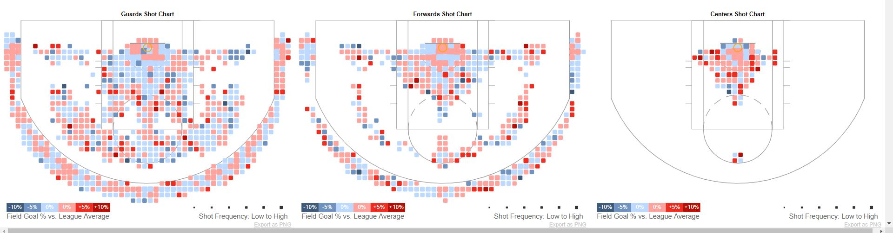

As you can see just from the images in the introduction this site has a lot of awesome visualiztions and interactivity. The amount of effor that went into this site is incredible and the owner really does deserve a lot of credit in my opinion. So, now I am going to talk about some specific features that I really like and enjoy about the site.
So first of all I really enjoy the color scheme that is used here. Not only is it selectable between two color scheme for the shot selection, but the colors make clear sense. Red being a player shoots well from that spot and blue meaning they don't. It's very simple to understand. He even adds percentages and hoverables for these whih allows a user to view more detail.
Probably my most favorite feature from this visualization has to be the shot chart distance visual. When you hover over one of the charts that displays the shot percentage at a distance a circle appears showing the distance away from the net it actually is. The feature gets me wondering how the person implemented such detailed data like that but regardless it is by far my favorite feature because it gives a better representation of a player's hotspots and I really enjoy the overall fluidity of the ring moving outwards. It it well done and adds complexity to the data while still being so simple!

Another like I had when it came to this was the actual representation of whole league. The user is able to view hotspots of the league for a given location and in even more detail for each position which I think is really cool because it shows the evolution of the league and how the game has evolved. Again each point is hoverable as well to see more data about each spot on the court like where it compares to the rest of the league.The color scheme again is the same so easily readable
The visualization also allows the user to view the points per game for each player and shows the ranking of that player in the league. It also includes even more detailed stats about how that player does against each team and allows users to see how potentially their favorite player will do against a specific team. I also forgot to mention prior that you can select and view how that player shot in a game and there's even an option to summarize the shot chart to away and home games.

The last little detail that I enjoy very much was the slider that allow for control the number of shots taken. It essentially shows the number of shots taken in any given area on the court. It a nice added effect that better helps representation for the league and each indiviual player. A user can also change the shot percentage as well to really hot spots on the floor for shooting the ball. It can be even simpler by changing the color scheme to just red and blue which is just a nice little feature to add.